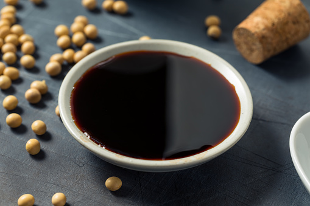
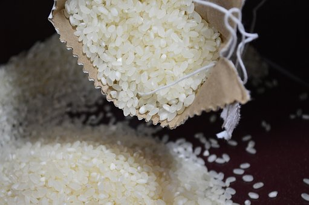

Here you can find the most common ingredients used for vegan recipes and some quick and easy recipes:
 The most common ingredients used in vegetarian recipes:
- Millet is a versatile and underrated dietary staple that vegans should get to know as an affordable way to add variety to your meals.
- Seitan is a high-protein form of vital wheat gluten that has a meaty texture lots of vegans really love.
- Soy and other proteinaceous substitutes are common in the vegan cheese category, and you can find these products in shredded, sliced and block form in most major grocery stores.
- Beans are an easy source of protein and are good on their own or in a recipe I can’t even begin to extol the versatile virtues and satiating.
- Seeds and nuts of all kinds are wonderful additions to the vegan pantry. You can use most of these ingredients in both baking or cooking recipes.
- Green Beans are the unripe, young fruit and protective pods of various common bean plants.
- Rice, either sticky or jasmine, is grown throughout Thailand and used to accompany many dishes coconut Milk is used in most.
- Almonds are one of the healthiest and most widely available nuts known to man, making them an excellent choice for vegan pantries.
Now you can buy the ingredients here
Here are some quick and easy recipes methods:

Cannellini / Pesto
Follow the instructions below:
- Place basil leaves, garlic, salt, pepper, olive oil and pine nuts in a food processor or blender. Blend to smooth purée, transfer to a bowl and add the cheese
- Add the garlic and Parmesan or Romano cheese and pulse several times more. Scrape down the sides of the food processor with a rubber spatula
- oss with pasta for a quick sauce, dollop over baked potatoes, or spread onto crackers or toasted
- While the food processor is running, slowly add the olive oil in a steady small stream
- Remove the cassia bark and blend the sauce roughly with a hand blender, then add the vegetables

Pancakes / Calzone
Follow the instructions below:
- To make the pancakes: In a jug, add the rice milk, margarine and egg yolks. In a large mixing bowl, add the flour, sugar and bicarbonate of soda.
- Whisk together the ingredients in the jug, then mix it into the flour mixture. Whisk the egg whites until fluffy, then gently fold them.
- Bring the pan to the boil. Add the margarine and whisk it in for 10 minutes over a medium-high heat, until the sauce turns a light caramel colour.
- Roll the mixture into 8 sausages. You can freeze the sausages to cook another time at this step if you like
- Pour over the tofu and stir gently to coat. Cover and leave to marinate for 30 minutes.
- Chop or tear romaine into large chunks, and place into a salad bowl with croutons, broccoli and capers.